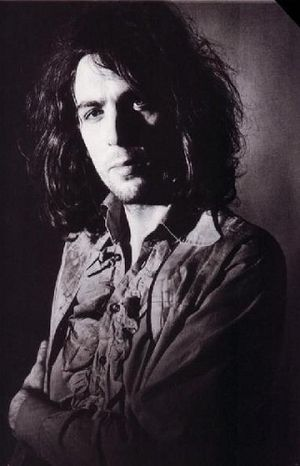

Syd Barret

Roger Keith Barrett, mais conhecido como Syd Barrett (Cambridge, 6 de janeiro de 1946 — Cambridge, 7 de julho de 2006) foi um cantor, produtor, poeta, guitarrista e pintor inglês, mais lembrado como um dos fundadores do Pink Floyd. Vieram de Barrett as principais ideias musicais e estilísticas daquela que, então, era uma banda de rock psicadélico, assim como o nome do grupo. Todavia, especulações sobre sua deterioração mental, agravada pelo exagerado uso de drogas, levaram à sua saída da banda, em 1968. Além de ser um dos pioneiros do rock psicodélico, com as suas expressivas linhas de guitarra e composições imaginativas, Barrett também foi um dos pioneiros do space rock e do folk psicodélico. Esteve ativo enquanto músico por apenas sete anos, gravando, com o Pink Floyd, quatro singles, dois álbuns e diversas músicas não lançadas; como artista solo, lançou um single e três álbuns, até entrar em reclusão autoimposta, que durou mais de trinta anos. Em sua vida pós-música, ele continuou pintando e se dedicou à jardinagem. Nunca mais voltou a público. Barrett morreu em 2006, por complicações advindas de diabetes. Diversas biografias foram escritas sobre ele desde os anos 80, e o Pink Floyd escreveu e gravou inúmeros tributos a ele após sua saída do grupo, sendo o mais conhecido deles o álbum Wish You Were Here, de 1975. Em 1996, ele foi induzido ao Hall da Fama do Rock and Roll, como membro do Pink Floyd.